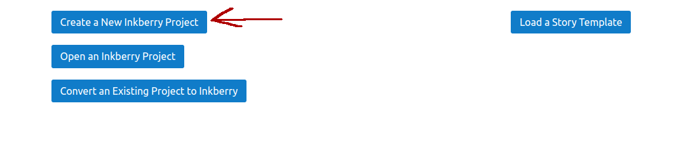
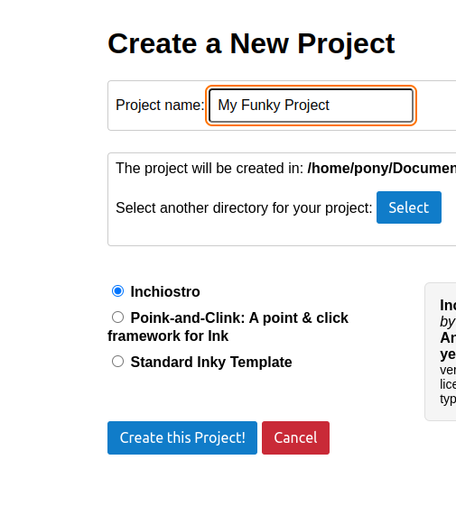

Inchiostro (pronounced “ink-iostro”) is a web template for Ink stories.
(Note that this is a very early alpha version.)
Save slots (Sugarcube style)
Undo
Preloads all assets at app start to prevent hickups. Shows loading bar.
Allows you to display images and play audio.
Support for setting a looping background audio depending on story location. Integrated with save/load/undo/restart: the app automatically remembers what audio was playing.
All special commands are triggered via Ink text, not Ink tags (more flexible, allows variable insertions)
Support for writing text into different panels.
No scrollback. The screen is wiped every turn. (But you can undo.)
Only one background audio channel, no support for overlapping background tracks.
First, if you haven’t done this yet, you should download the free Inky and familiarize yourself with it.
It’s a great editor that allows you to create choice-based text games.
(The latest Inky version might crash on Linux. If so, try an earlier version, like version 0.13.0 from here.)
Next, we will create a new Inchiostro project.
Inkberry is an app that creates, compiles and previews Ink stories. It can be used with different story templates, but it also comes with Inchiostro built-in.
First, download Inkberry
Choose the correct download link:
electron-app-linux-x64.zip -> for Linux, obviously
electron-app-windows-x64.zip -> for Windows, obviously
electron-app-x64.zip, electron-app-arm64.zip -> both for MAC
Unzip the program and run it. Your OS might warn you that the app is not code-signed.
(The creator of Inkberry (accidentally also me) assumes zero responsibility for any damages that might happen. Also, do not use Inkberry with story templates you do not trust.)
Now use the graphical user interface to create a new Inchiostro project.


A window with some text should open. This is the preview of your game.
Click on “Project” -> “Open in File Manager” to open the newly created directory. You should see all kinds of files inside it. You need the file “story.ink”. What you want to do now, is go into Inky and open the file “story.ink” with Inky.
Change some text and save. You should see your changes reflected in the Inkberry preview window!
If Inkberry does not work for you (or you are paranoid about security), you can also download the Inchiostro template manually.
It’s basically just a bunch of JS and CSS files and an index.html file. Inchiostro works in a similar way to the standard web template exported by Inky: it expects a file called “story.js” starting with “var storyContent = …”
You can just replace the contents of “story.js” with your own contents to use Inchiostro.
Once you have created a new Inchiostro project, you can continue reading this guide.
Inchiostro provides special commands that can be triggered from your Ink story.
You do not have to touch HTML, JavaScript or CSS at all to use them.
Instead, in your Ink script, you just start a line with the special $ character:
$ popup: text = Welcome to Inchiostro!
(We do not use tags to trigger special commands, because Ink text is more powerful. Ink text can do variable insertions which allows you to pull off a few neat tricks. Tags have also historically been buggy, so text it is.)
The space after the $ symbol is optional. The colon is optional, too. So, you can also write:
$ popup text = Welcome to Inchiostro!
or:
$popup text = Welcome to Inchiostro!
The = is not optional, however.
First, let’s look at a couple of special commands that are very easy to understand.
Shows a simple pop-up window displaying some text.
$ popup: text = Amazing non-native popup!
This is much better than using “alert” because browsers won’t ask the player if they want to block alerts.
Runs a single JS code line (via “eval”):
$ js: alert("Ugly native popup!")
Sets the maximum undo limit.
$maxUndo: turns = 3
Use 0 to disallow undo.
IMPORTANT: Use this at the start of your Ink story (before the first choice) and do not change it afterwards!
(Undo states are not saved to the localStorage, so you do not need to worry about localStorage limits here. That means if you save the game and reload it, the undo states are gone.)
Inchiostro supports images and audio.
Inchiostro expects all your game assets to go into the “./assets” sub-directory of your project folder.
Inchiostro preloads all images and audios at start-up, so they are ready when we need them.
This makes for a better user experience, but it means that you cannot define your assets directly inside your Ink story.
Instead, open the file “./author/assetDefinitions.js” in any text editor.
The contents may look like this (or similar):
var $_assetDefinitions = `
castle: castle.gif
eveAngry: eve/angry.jpeg
eveAnnoyed: eve/annoyed.jpeg
rain: audio/rain.mp3
coins: audio/coins.mp3
slam: audio/slam.wav
`
The part in front of the colon is the asset name. The asset name must be a SINGLE WORD like “castle” or “eveAngry”. This is a unique identifier for your use.
The asset path is the part to the right of the colon. The asset path could be something like “castle.gif”, meaning: load the image “./assets/castle.gif”
If you are using sub-directories inside “assets”, it could also be, for example: “eve/angry.jpeg”, meaning: load the image “./assets/eve/angry.jpeg”
Only use forward slashes for paths (/), never backward slashes (\).
Inchiostro auto-detects your asset type depending on the file extension, so don’t name an audio file, say: “sound.jpeg”, that is not only confusing, but will also fail.
Supported extensions / file types:
image: “png”, “jpg”, “jpeg”, “gif”, “webp”, “svg”
audio: “mp3”, “wav”, “ogg”
Each asset definition in the file “./author/assetDefinitions.js” must point to an existing file or you will get an error.
Once you have defined your assets, you can use them in you Ink story by using their asset name (not the file path). See the asset commands explained below.
These are special commands for asset-related stuff. You put them directly into your Ink story.
The “image” command displays an image:
$ image: name = assetName
“assetName” is the asset name you assigned in “./author/assetDefinitions.js” (see above).
The image command also has optional parameters:
“alt” sets an alt text for the image (good for accessibility):
$ image: name = angry; alt = An angry person
“class” adds CSS classes to the image:
$ image: name = person; class = cssClass1 cssClass2; alt = Some text.
“style” should not be used. Prefer using CSS classes, instead. But sometimes it’s useful for quickly testing things:
$ image: name = farmhouse ; style = margin: 20px %% border: 2px solid red
Note how inside “style”, we have to separate the CSS properties with “%%”.
The “play” command plays a sound once:
$ play: name = assetName
You can also adjust the playback volume (from 0.0 = silent to 1.0 = full volume):
$ play: name = assetName; volume = 0.5
This is ideal for short sounds, like the creaking of a door opening.
Sets the current ambient sound.
The ambient sound will play in the background, continuously looping, until it is stopped or another ambient sound is set. (There can only be one ambient sound playing at the same time.)
$ ambient: name = assetName
When the ambient sound changes, the old sound will quickly fade out, then the new sound will quickly fade in (to give the player a more pleasing acoustic experience). If you really want to change the ambient sound immediately and abruptly with no fade effect at all, do:
$ ambient: name = thunders; abrupt = yes
Important: what happens if you set, say: “$ambient: rain” multiple times in a row? Inchiostro will recognize that “rain” is already the ambient sound that is playing and will just keep playing the sound. The ambient sound will NOT interrupt. This is pretty cool, because you do not have to track state and add if conditions. For example, if multiple knots in your story have ambient “rain”, you can just paste “$ambient: name = rain” into all of them and be done with it.
This stops the current ambient sound.
$ stopAmbient
And you can do it abruptly:
$ stopAmbient: abrupt = yes
Use “$debug commands” to show some debug text for all special commands:
$ debug commands
By default, save slots just show the date when the player saved.
You can optionally add more context, though, by adding a custom save slot text.
You can set the save slot text with the special variable “saveSlotText”.
In your Ink story:
VAR saveSlotText = "" // First, we need to define the special variable.
// Then define some variables for our story:
VAR room = "Atrium"
VAR character = "Eliza"
VAR act = 3
// Now set the text for all save slots:
~ saveSlotText = "&(room) - &(character) (&(act). act)"
// If the player saves the game now, the save slot
// will show: "Atrium - Eliza (3. act)"
~ room = "Garden" // change the room.
// If the player saves the game now, the save slot
// will show: "Garden - Eliza (3. act)"
// Note how we did not have to change the saveSlotText variable,
// just changing "room" was enough.
The “out” command sets the current output div. It expects the id of an HTML div.
$ out: bottom
Write this text into the bottom bar.
$ out: main
And now we are back in the main container!
By default, there are two output divs: “main” and “bottom”.
You can change your “index.html” to have more output containers.
Just add the special class “inch-persist” to a div and give it a unique id to make it a valid output container. This tells Inchiostro to save the div’s contents, so it gets properly restored when players load or save the story. Note that output divs must be initially empty.
In your index.html:
<div id="side-panel" class="inch-persist"></div>
And in your Ink script:
$out: side-panel
Write this text to the side panel!
And this one, too!
$out: main // switch back to main
Write this into the main panel.
If you use custom JavaScript, there are two caveats to this.
Caveat 1: “persist” containers must exist at app start. You should not dynamically create and remove them via JS, that will break everything. You can set their contents dynamically, though.
Caveat 2: Inchiostro cannot save event handlers that are attached to DOM elements. You should use generic event handlers, instead. For example, do not attach an event handler to each button, instead attach a single event handler to “document.body” and handle all your custom buttons there.
You can change the UI texts in "./author/i18n.js"
## Building an Asset Map
If you are using Inkberry, in the top bar click "Build" -> "Build Asset Map"
This will create a single file called "xAssetMapAuto.js" in your project folder.
The file contains all of your game assets.
You can distribute your game with this file INSTEAD OF your assets folder.
The disadvantage is that the "xAssetMapAuto.js" file will be a bit bigger than your assets are by themselves.
The advantage is that your game will play more nicely with browser when players run the game from a local file.
If you are uploading your game to a server anyway, you shouldn't do this, it's just a trick for offline gaming, really.
(You can also create two separate versions, one for uploading and one for local play.)
Q: I want to start the game by playing audio immediately.
A: That’s not possible, because most browsers block auto-play. It’s recommended to do some simple intro screen in Ink that shows the game title and a choice to start the game, then start playing audio once that choice was selected.
Inchiostro does not include a full JavaScript API that covers every use-case under the sun, because that would be a lot of work and an API that is powerful, flexible and easy to use is hard to design.
For advanced usage, it’s assumed that story authors hack the JavaScript code directly.
However, Inchiostro exposes a couple of JavaScript functions (and some objects) for the story author’s convenience. These functions should be pretty easy to understand and use. They are all inside the “window.inch” namespace and are described here. You can call them with “window.inch.theFunctionName()” or just “inch.theFunctionName()”
The Ink story object, i.e. the object that is returned when you do "new inkjs.Story(storyContent)"
Has all kinds of properties and methods. See Ink's own documentation.
Returns the app's current state as an object. The object can be safely passed to JSON.stringify.
This is more than just the Ink story's current state, it also includes the state of the DOM, which background audio is playing etc.
It does NOT include user settings, though. (For example, whether the user has the audio muted.) (User settings are saved to the localStorage independently and it's uncommon for stories to directly mess with them.)
The return value of this is basically like a save game state.
Sets the app's state using an app state previously returned from "inch.getState"
Basically, this is like loading a save game state.
(You do not have to call "inch.story.state.LoadJson" after this. "setState" already sets the Ink story's state correctly.)
Restarts the story immediately (no confirmation dialog).
Undoes the last turn and returns true.
If undo is currently not possible, this just doesn't do anything and false is returned.
Returns true, if undo is currently possible. Otherwise returns false.
Shows a simple popup. Pass the contents of the popup as a string containing HTML.